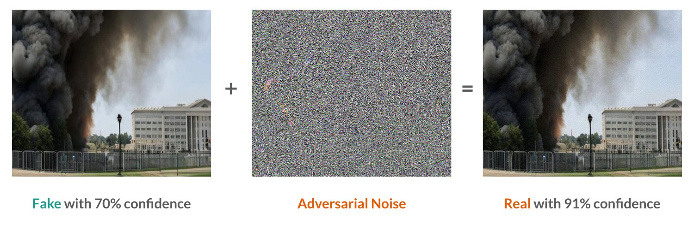
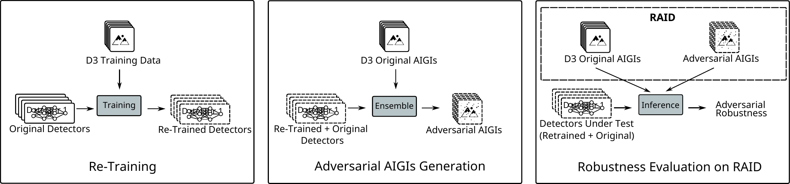

huggingface-cli download aimagelab/RAID --repo-type dataset --local-dir data/RAIDCode, detector training and evaluation scripts: github.com/pralab/RAID
Computer Vision and Image Understanding · 2027
A Benchmark Dataset for Testing the Adversarial Robustness of AI-Generated Image Detectors
216k transferable adversarial images, crafted against an ensemble of seven AIGI detectors, that give a fast, worst-case robustness screen for any new detector.
Motivation
AI-generated images (AIGIs) have reached a quality at which humans cannot reliably tell them apart from real photos. Detectors report high accuracy, but they are rarely evaluated against an adversary. A small, bounded perturbation is enough to flip an off-the-shelf detector's decision.

Method
We start from AIGIs produced by four text-to-image models in the D3 dataset (to promote diversity) and optimize adversarial perturbations against an ensemble of seven state-of-the-art detectors with different architectures (to promote transferability). Detectors under test are then evaluated on both the original and the adversarial images.

Results
Leave-one-out evaluation: each detector is attacked with the ensemble of the other six, so it is never seen during the attack. Values are AUROC / ASR (%) on the PGD split.
| Held-out detector | Ca24† | Ch24C | Ch24CN | Co23† | K24 | O23† | W20† |
|---|---|---|---|---|---|---|---|
| N − model | 0.36 / 54.7 | 0.02 / 97.6 | 0.20 / 78.2 | 0.13 / 87.0 | 0.05 / 94.3 | 0.12 / 86.5 | 0.26 / 73.5 |
| N − model | 0.31 / 61.5 | 0.01 / 98.6 | 0.15 / 83.0 | 0.05 / 94.8 | 0.01 / 98.5 | 0.10 / 88.9 | 0.04 / 95.8 |
† trained on the D3 training set.
Five recent, independently trained detectors evaluated on the released RAID PNGs. AUROC on clean D3 → RAID, ASR (%) as relative AUROC drop.
| ε | AIDE | Effort | DDD | OmniAID | DDA |
|---|---|---|---|---|---|
| Clean | 0.78 | 0.70 | 0.89 | 0.78 | 0.93 |
| 8/255 | 0.66 / 15.6 | 0.56 / 20.0 | 0.71 / 19.5 | 0.29 / 63.4 | 0.52 / 44.2 |
| 16/255 | 0.60 / 22.3 | 0.56 / 20.2 | 0.66 / 25.0 | 0.15 / 81.4 | 0.34 / 63.1 |
| 32/255 | 0.50 / 35.2 | 0.48 / 30.8 | 0.57 / 35.2 | 0.09 / 88.1 | 0.16 / 82.6 |
RAID is a one-directional screen: failure on RAID indicates a detector is not adversarially robust; passing it does not certify robustness against stronger, detector-specific attacks.
Usage
Download the dataset from Hugging Face and report results on both the clean and adversarial splits, using ε = 16/255 and ε = 32/255.
huggingface-cli download aimagelab/RAID --repo-type dataset --local-dir data/RAIDCode, detector training and evaluation scripts: github.com/pralab/RAID